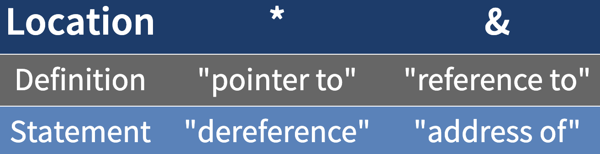

// C++ #include <iostream> using namespace std; int main() { cout << "Hello World" << endl; return 0; }
include statements are like import, this is the preprocessorusing namespace std needs to be at the top of every single C++ program you writePretty Cool Loading
include and # statementsPre-pounding - All the #include, #ifndef, #endif and #define
include is for direct file copies. Only use .h files.define is for macros - constants, text replacementEvery .h file should have:
// Check if it's define, and then define #ifndef HEADER_H #define HEADER_H // Includes #include "other_header.h" // Code goes here #endif
using// Valid! if (x) // Technically valid, TERRIBLE idea without the double == if (x = 0)
// Prototype // ret_type func_name (param_list); bool even (int x); bool even (int x) { // Do stuff here }
public: and private: sections.h filecpp filecpp file for main()When you call the default constructor, do not use parentheses.
// Calling default constructor, NO PARENTHESES! IntCell m1; // Calling specific constructor, PARENTHESES! IntCell m2 ( 37 );
#ifndef <identifier (generally file name)>#define <identifier (generally file name)>#endif#ifndef INTCELL_H #define INTCELL_H class IntCell { public: IntCell( int initialValue = 0 ); // const used like this means "I won't modify this object" int getValue( ) const; void setValue( int val ); private: int storedValue; int max(int m) const; }; #endif
Actually write your methods at some point!
return_type Class::method_name() maybe_constconst// Include your header #include "IntCell.h" using namespace std; // (not really necessary, but...) // Constructor IntCell::IntCell( int initialValue ) : // This is equivalent to storedValue = initialValue storedValue( initialValue ) { } int IntCell::getValue( ) const { return storedValue; } void IntCell::setValue( int val ) { storedValue = val; } int IntCell::max(int m) const { return (m>storedValue) ? m : storedValue; }
main and static variables#include <iostream> using namespace std; // Don't forget to include your header file #include "MyHeaderFile.h" int main () { // Do things return 0 }
Headers:
CPP:
The friend keyword (ex. friend class List) in the fields of a class allow one class to access another's private members.

Can be for primitive or object types
int * x; - A pointer to an int. The address where that integer lives.The non-spaced, non-declaring asterisk can also be used to evaluate the object to which the pointer points
* *x = 2;
The star follows a pointer to the pointee, and deal with its target/value.
It really means whatever is at that address . . .
Means address of
// Sir! Fetch the address of John, and put it in folder. folder = &John;
Initialize your pointers to NULL! Otherwise, RUNTIME ERRORS will occur.
Then, you just check for a NULL value before proceeding.
Differences between references and pointers, remember icky (ICI):
List sampleList // Holds an address List & theList = sampleList;
float myArray[5]type * somePointer = new typeStack addressed memory would be something like Entity e() using the default constructor.
// Creation int * myIntPointer = new int int * myArrayPointer = new int [5] // Deletion delete myIntPointer delete [] myArrayPointer
. for non-pointers and references-> for pointers, equivalent to (*object).fieldCall by value, reference, or const?
void swap (int &x, int &y);
bool compare(const Rational & left, const Rational & right);
No params, just for compilation
Called when
deleteUses the ~, like ~ObjectName();
IntCell original; IntCell copy = original; // or IntCell copy(original);
Called in the following situations:
class Box { public: // Overload + operator to add two Box objects. Box operator+(const Box& b) { Box box; box.length = this->length + b.length; box.breadth = this->breadth + b.breadth; box.height = this->height + b.height; return box; }